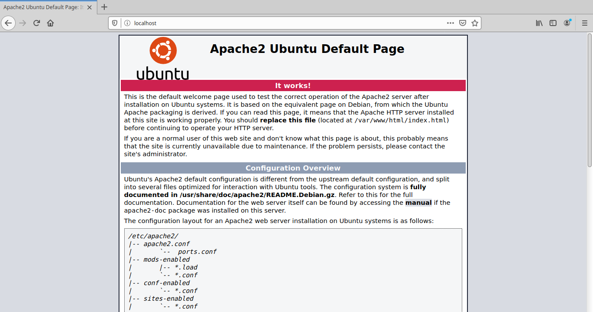
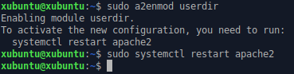
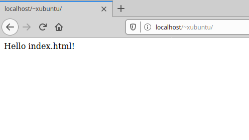
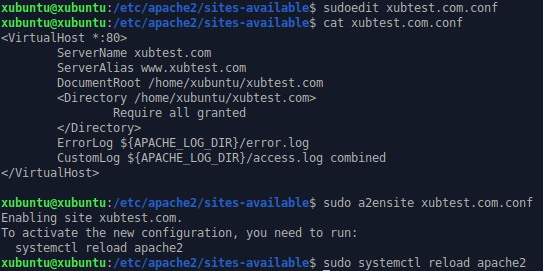
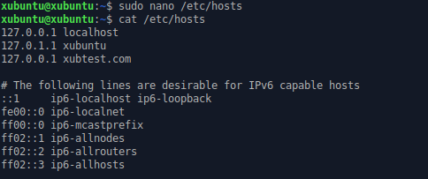
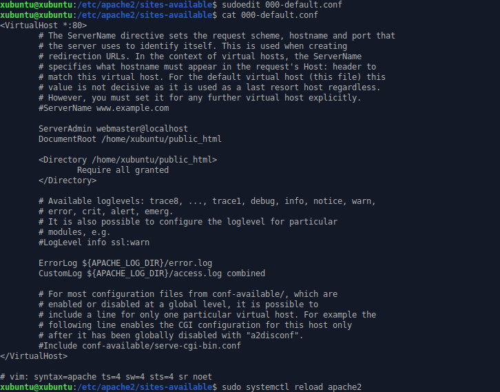
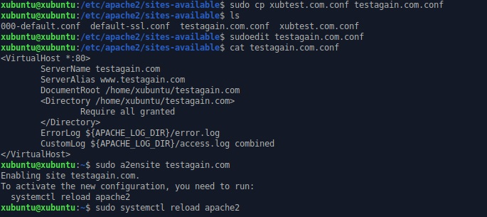
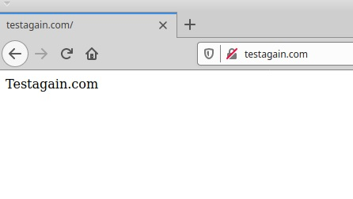

Apache2 asennus, testailu ja lokin tarkastelu
11.02.-20, Kristian KoponenTehtävänanto
Linux-palvelimet h3
- Asenna Apache, laita käyttäjien kotisivut toimimaan. Testaa esimerkkikotisivulla.
- Tee Apachelle uusi sivu, joka näkyy suoraan palvelimen pääsivulla, mutta jonka sivuja voi muokata normaalin käyttäjän oikeuksilla (name based virtual host, DocumentRoot käyttäjän kotihakemistoon).
- Surffaa oman palvelimesi weppisivuja. Etsi Apachen lokista esimerkki onnistuneesta (200 ok) sivulatauksesta ja epäonnistuneesta (esim 404 not found) sivulatauksesta. Analysoi rivit.
- Vaihda Apachen oletussivu. Eli laita palvelimen etusivulla (ilman tildeä) näkyvä sivu niin, että alkuperäinen on jonkun käyttäjän kotihakemistossa ja voit muokata sitä ilman pääkäyttäjän oikeuksia.
- Laita kaksi nimeä samaan IP-osoitteeseen. Voit simuloida nimipalvelun toimintaa /etc/hosts -tiedoston avulla. Eli niin, että samalla palvelimella osoitteella teronlenkkisivu.com tulee eri sisältö kuin osoitteella opipentest.com.
Käytetyt laitteet
Lenovo ThinkPad X220
| Prosessori: | Intel(R) Core(TM) i5-2540M @ 2.60Ghz |
|---|---|
| Keskusmuisti: | 4GiB 1333Mhz DDR3 |
| Näytönohjain: | Intel HD Graphics 3000 |
| Käyttöjärjestelmä: | Windows 10 64-bit |
SanDisk Ultra USB 3.0 32 GB
xubuntu 18.04.3 amd64 -liveApachen asentaminen ja käyttäjän kotisivu
19:25
Aloitan päivityksellä, eli komennoilla sudo apt-get update ja sudo apt-get upgrade
19:29
Seuraavaksi asennan apache2 web-palvelimen komennolla sudo apt-get install apache2 -y, testasin että sovellus toimii avaamalla selaimellani localhost -sivun. Testasin saman myös IP-osoitteellani, jonka hain komennolla ip addr. Toimi hyvin kummallakin tavalla
{kind=link}
Kuten kuvasta näkyy, apache pyörii.
19:37
Seuraavaksi luon käyttäjälle kotisivun. Userdirin aktivoimiseksi käytän komentoa sudo a2enmod userdir. Konsoliin tulee viesti siitä, että muutoksia varten on käynnistettävä apache2 uudelleen, joka hoituu komennolla sudo systemctl restart apache2.
{kind=link}
19:43
Luon oletuskäyttäjälle "xubuntu" public_html kansion komennolla mkdir public_html tämän kotihakemistoon. Luon yksinkertaisen index.html tiedoston kansioon. Navigoidaan selaimella osoitteeseen localhost/~xubuntu testataksemme, että käyttäjän sivu toimii.
{kind=link}
Name Based Virtual Host ja DocumentRoot käyttäjän kotihakemistoon
Aloitetaan navigoimalla sites-available kansioon komennolla cd /etc/apache2/sites-available/ ja luomalla uusi tiedosto komennolla sudoedit xubtest.com.conf. Kirjoitetaan sinne servername, alias ja kansio johon halutaan viitata. Aktivoidaan konfiguraatio komennolla sudo a2ensite xubtest.com.conf ja luetaan konfiguraatiotiedostot uudelleen komennolla sudo systemctl reload apache2.
{kind=link}
Apachen lokit
Lähden nyt testaamaan edellistä osaa. Sillä xubtest.com domainia ei oikeasti ole, ihan aluksi muokkaan /etc/hosts tiedostoa ja ohjaan siellä selaimen oikeaan paikkaan. Kirjoitan komennon sudo nano /etc/hosts ja lisään rivin kyseiselle osoitteelle.
{kind=link}
Koitan nyt hakea selaimella osoitetta xubtest.com. Sieltä tulee virhe "403 Forbidden". Tarkastelen apachen virhelokia komennolla tail -n 1 /var/log/apache2/error.log nähdäksemme viimeisimmän tapahtuman. Virheilmoitus ei ollut mitä kuvittelin. Odotin valitusta puuttuvasta hakemistosta, sillä konfiguraatio-tiedosto viittaa xubtest.com kansioon käyttäjän kotihakemistossa. Sainkin seuraavanlaisen virheilmoituksen.
[Tue Feb 11 21:05:03.873605 2020] [authz_core:error] [pid 19306:tid 140272692360960] [client 127.0.0.1:47384] AH01630: client denied by server configuration: /home/xubuntu/xubtest.com
Luen nyt Apachen dokumentointia selvittääkseni asiaa. Ensimmäisenä näemme ajankohdan, jolloin virhe tapahtui. Seuraavana näkyy moduuli, joka tuotti lokimerkinnän. Tätä seuraa prosessin ID ja thread ID. Ennen jyvälle pääsemistä näkyy vielä asiakas joka virheen aiheutti. Viimeisimpänä näkyy oleellisin, eli mikä virhe tuli ja sen tunnus. Tässä tapauksessa virheilmoitus "AH01630" kertoo, että asiakasohjelman pääsy on evätty palvelinkonfiguraation vuoksi, vaikka konfiguraatiotiedostossa oli kirjoitettu "Require all granted" sille kuuluvalle paikalle.
Etsin virhekoodilla lisätietoa stackoverflow:sta ja siellä eräs käyttäjä kertoo, että virhe tulee virheellisestä DocumentRoot hakemistosta, eli juuri mitä odotin. Korjaan asian luomalla kotihakemistoon xubtest.com kansion komennolla cd && mkdir xubtest.com ja luon kopioin sinne public_html kansioon luomani index.html tiedoston komennolla cp public_html/index.html xubtest.com/.
Nyt kun yritän päästä sivulle xubtest.com, tulee luomani index.html -sivu esiin. Katson vielä access-lokia komennolla tail -n 1 var/log/apache2/access.log ja saan seuraavanlaisen rivin.
127.0.0.1 - - [11/Feb/2020:21:22:32 +0000] "GET / HTTP/1.1" 200 301 "-" "Mozilla/5.0 (X11; Ubuntu; Linux x86_64; rv:72.0) Gecko/20100101 Firefox/72.0"
Ensimmäisenä näemme localhostin IP-osoitteen. Yhteys tuli tästä koneesta. Toisena näemme ajankohdan, jolloin yhteyspyyntö tuli. Seuraavan näemme tietoa pyyntitavasta. Tässä tapauksessa GET-metodilla, HTTP 1.1:n yli. Seuraavaksi on status-koodi; 200 tarkoittaa OK. Tämän numeron jälkeen näemme tarjoillun sisällön kokoa. Välissä on mysteerinen viiva lainausmerkeissä. Lopputieto on selaimen yksityiskohtia. Mozilla Firefox 64-bittiselle Ubuntulle, joka toimii Gecko-selainmoottorilla.
Oletussivun vaihtaminen.
Tässä vaiheessa meillä on toimiva index.html -sivu käyttäjän kotihakemistossa, joka tarjoillaan xubtest.com osoitteella, eli eri sisältö kuin mitä localhostiin tulee oletusarvoisesti 000-default.conf konfiguraation mukaisesti. Nyt palvelimen IP-osoitteella aukeaa apache2:n oletussivu /var/www/ -kansiosta.
Haluan vaihtaa oletussivun palvelimella. Voisin käyttää komentoa sudo a2dissite 000-default.conf, ottaakseni oletus-konfiguraation pois päältä ja priorisoidakseni xubtest.com.conf tiedoston, mutta mikäli aion luoda uusia tiedostoja, oletus-sivu määrittyy konfiguraatiotiedostojen aakkosjärjestyksen mukaan. 000-alkuinen oletustiedosto on siis hyvä olla.
Käynkin siis muokkaamassa 000-default.conf tiedoston DocumentRoot kohtaa ja lisään sinne luvan "Require all granted" /etc/apache2/sites-available/ -kansiossa komennolla sudoedit 000-default.conf ja lataan apache2:n uudelleen komennolla sudo systemctl reload apache2
{kind=link}
Muokkasin hieman xubuntu/public_html/ -kansiossa olevaa index.html tiedostoa erottaakseni sen xubuntu/xubtest.com/ -kansiossa olevasta tiedostosta. Kokeilin avata IP-osoitteella sivun ja uudistettu index.html aukesi selaimeeni.
Useampi nimi samaan IP-osoitteeseen ja virheilmoitus Apachen asetustiedostossa
Palaan tässä vaiheessa eri nimien luontiin. Hakeudumme takaisin kansioon /etc/apache2/sites-available/ ja luomme uuden .conf -tiedoston aiemmin käytettyjen komentojen tavalla. Kopioin xubtest.com tiedoston ja luon sen pohjalta uuden komennolla sudo cp xubtest.com.conf testagain.com.conf
Vaihdan sieltä xubtest.com nimen testagain.comiin. Lataan apache2:n uudelleen komennolla sudo systemctl reload apache2.
{kind=link}
Luodaan DocumentRootissa viitattu xubuntu/testagain.com -kansio ja sinne index.html tiedosto. Kirjoitetaan aiemmin käsiteltyyn /etc/hosts tiedostoon tarvittava testagain.com nimi samalla 127.0.0.1-osoitteella. Kokeillaan tätä selaimessa kirjoittamalla osoitekenttään testagain.com ja saadaan eri sivu näkyviin kuin xubtest.com -osoitteella tai localhostilla/IP:llä.
{kind=link}
Lähteet
http://terokarvinen.com/2020/linux-palvelimet-2020-alkukevat-kurssi-ict4tn021-3010/#h3
http://terokarvinen.com/2008/install-apache-web-server-on-ubuntu-4
http://terokarvinen.com/2018/name-based-virtual-hosts-on-apache-multiple-websites-to-single-ip-address
https://www.linode.com/docs/websites/hosting-a-website-ubuntu-18-04/
https://stackoverflow.com/questions/18392741/apache2-ah01630-client-denied-by-server-configuration
https://httpd.apache.org/docs/2.4/logs.html#errorlog
https://httpd.apache.org/docs/2.4/logs.html#accesslog